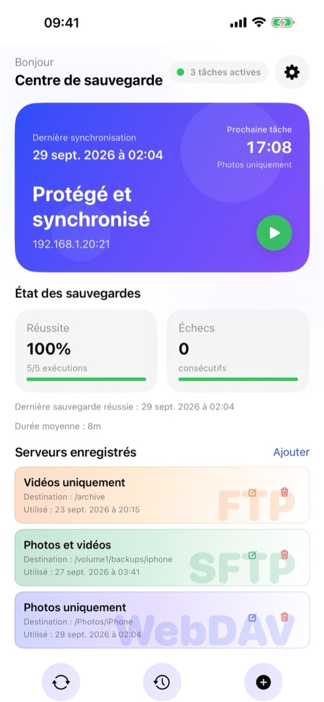
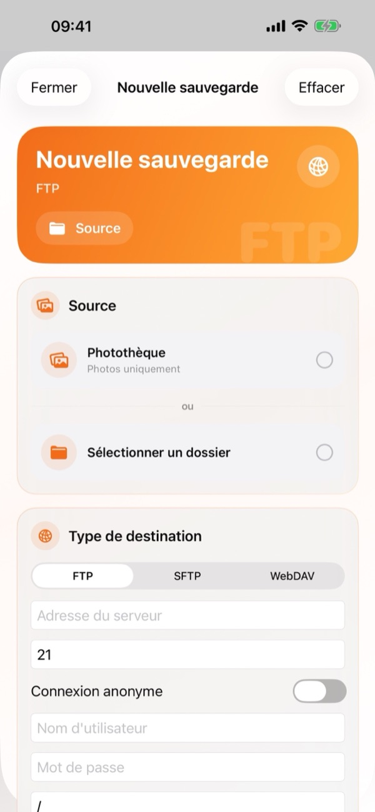
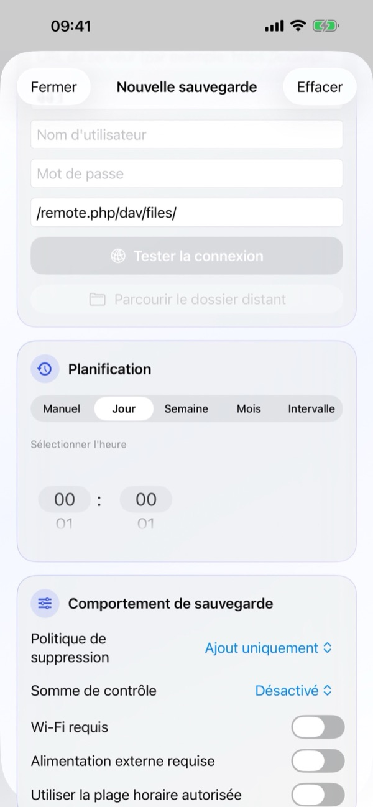
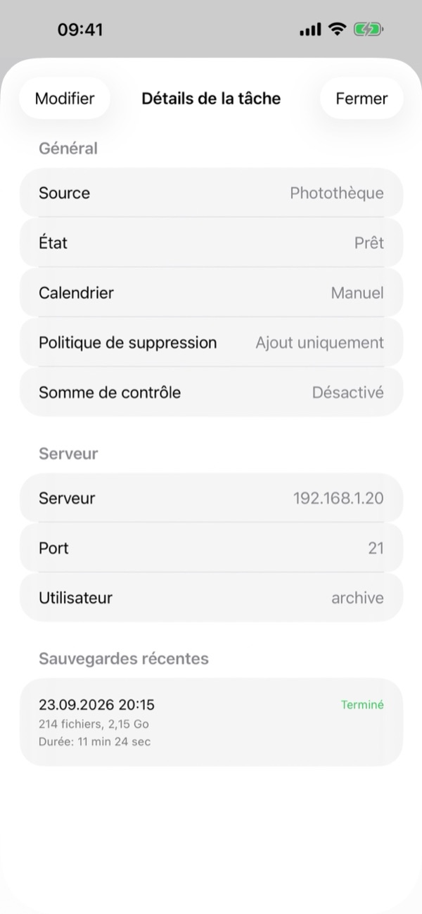
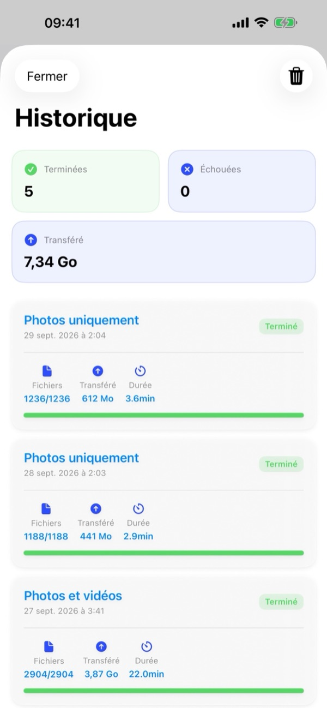
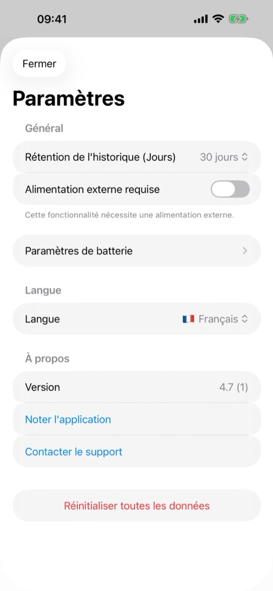

1. Ce qu'il vous faut
- Un serveur compatible : Tout NAS (Synology, QNAP, TrueNAS, Unraid), serveur domestique ou cloud personnel (Nextcloud, ownCloud, WebDAV) prenant en charge FTP, SFTP (SSH) ou WebDAV (HTTP/HTTPS).
- Vos identifiants : Adresse du serveur, port (FTP 21, SFTP 22, WebDAV 443/80), Nom d'utilisateur et Mot de passe (ou connexion anonyme pour FTP).
- Autorisations iOS : Accès complet à la Photothèque, accès au Réseau local (pour un serveur domestique) et Notifications.
2. Présentation du Centre de sauvegarde
À l'ouverture de l'application, le Centre de sauvegarde affiche l'état complet de vos sauvegardes en temps réel :
- Carte d'état : Indique la dernière synchronisation, l'heure de la prochaine tâche, l'état global, l'adresse du serveur et le bouton vert Lecture (▶) pour lancer une sauvegarde immédiatement.
- Santé des sauvegardes : Affiche le taux de réussite, le nombre d'échecs consécutifs, la dernière sauvegarde réussie et la durée moyenne.
- Serveurs enregistrés : Liste vos tâches FTP, SFTP et WebDAV avec des boutons rapides pour Modifier (✏️) ou Supprimer (🗑️). Touchez une carte pour ouvrir les Détails de la tâche.
- Barre inférieure et Paramètres : Utilisez les trois boutons en bas de l'écran pour Synchroniser (🔄), ouvrir l'Historique (🕒) ou créer une Nouvelle sauvegarde (+). L'icône engrenage (⚙️) en haut à droite ouvre les Paramètres.

3. Créer une nouvelle sauvegarde
Touchez le bouton + en bas du Centre de sauvegarde (ou Ajouter à côté de Serveurs enregistrés) pour ouvrir Nouvelle sauvegarde :
- Source : Choisissez la Photothèque (photos, vidéos ou les deux) ou touchez Sélectionner un dossier pour choisir un dossier dans l'app Fichiers d'iOS.
- Type de cible : Sélectionnez FTP, SFTP ou WebDAV. Saisissez l'adresse du serveur, le port, le Nom d'utilisateur, le Mot de passe et le chemin distant (ex.
/remote.php/dav/files/). Touchez Tester la connexion puis Parcourir le dossier distant pour choisir le dossier cible. - Planification : Choisissez Manuel, Jour, Semaine, Mois ou Intervalle, et réglez l'heure sous Sélectionner l'heure.
- Comportement de sauvegarde : Configurez la Politique de suppression, la Somme de contrôle et les conditions d'exécution, puis enregistrez la tâche.
Après la première sauvegarde complète, seuls les fichiers nouveaux ou modifiés sont transférés, ce qui rend les sauvegardes suivantes beaucoup plus rapides.


4. Détails et gestion des tâches
Touchez une tâche sous Serveurs enregistrés pour afficher les Détails de la tâche :
- Général : Consultez la source, l'état actuel, la planification, la Politique de suppression et l'option Somme de contrôle.
- Serveur : Vérifiez l'adresse du serveur, le port et l'utilisateur.
- Sauvegardes récentes : Consultez les dernières exécutions de cette tâche (date, statut, nombre de fichiers, taille et durée).
- Touchez Modifier en haut à gauche pour ajuster les réglages de la tâche.

5. Planification et conditions
Dans Planification, choisissez la fréquence : Manuel, Jour, Semaine, Mois ou Intervalle, avec l'heure souhaitée sous Sélectionner l'heure.
Sous Comportement de sauvegarde, définissez les conditions requises :
- Wi-Fi requis : N'utilise jamais les données mobiles.
- Alimentation externe requise : S'exécute uniquement lorsque l'iPhone est en charge.
- Utiliser la plage horaire autorisée : Limite les sauvegardes automatiques à une tranche horaire (par exemple la nuit).
- Niveau minimum de batterie (dans Paramètres › Paramètres de batterie) : Suspend la sauvegarde si la batterie est trop faible.
6. Politique de suppression, Somme de contrôle et iCloud
Sous Comportement de sauvegarde, choisissez comment gérer les fichiers supprimés et la vérification d'intégrité :
- Politique de suppression › Ajout uniquement
- Rien n'est jamais supprimé du serveur. Recommandé si vous souhaitez libérer de l'espace sur l'iPhone après la sauvegarde tout en conservant vos photos sur le serveur.
- Politique de suppression › Miroir
- Le dossier distant reste une copie exacte de la source. Les fichiers supprimés sur l'iPhone sont également supprimés du serveur.
- Politique de suppression › Suppression archivée
- Les fichiers retirés sur l'iPhone sont déplacés vers un dossier daté .backupflow_archive sur le serveur.
- Somme de contrôle
- Vérifie l'intégrité de chaque fichier après l'envoi (réglé sur Désactivé par défaut pour une vitesse maximale).
Astuce Photos iCloud : Activez Télécharger les éléments iCloud si nécessaire pour sauvegarder également les originaux stockés uniquement sur iCloud.
7. Sauvegarde en arrière-plan
BackupFlow utilise BGTaskScheduler d'iOS pour exécuter les sauvegardes planifiées. Comme iOS gère le moment exact d'exécution en fonction de la batterie et de l'utilisation de l'appareil, la tâche peut démarrer légèrement après l'heure choisie ou envoyer une notification.
Si iOS interrompt un transfert, ouvrez simplement BackupFlow : la sauvegarde reprend automatiquement en ignorant les fichiers déjà envoyés. Pour une première sauvegarde volumineuse, gardez l'iPhone connecté au Wi-Fi et au chargeur.
8. Historique des sauvegardes
Touchez le bouton central Historique (🕒) en bas du Centre de sauvegarde :
- Cartes récapitulatives : Affichez le total des sauvegardes réussies, échouées et le volume total transféré (Go/Mo).
- Journaux détaillés : Chaque entrée indique le nom de la tâche, la date, le nombre de fichiers envoyés, la taille transférée et la durée. L'icône corbeille (🗑️) en haut à droite permet d'effacer l'historique.

9. Paramètres de l'application
Touchez l'icône engrenage (⚙️) en haut à droite du Centre de sauvegarde pour ouvrir les Paramètres :
- Rétention de l'historique (jours) : Durée de conservation de l'historique (ex. 30 jours).
- Alimentation externe requise et Paramètres de batterie : Règles globales d'alimentation et de batterie.
- Langue : Changez la langue de l'application à tout moment parmi les 12 langues prises en charge.
- À propos : Consultez la Version, touchez Évaluer l'application ou Contacter le support.
- Réinitialiser toutes les données : Supprime toutes les tâches, l'historique et les mots de passe enregistrés sur cet iPhone sans toucher aux fichiers présents sur vos serveurs.

10. Dépannage
- Impossible de me connecter au serveur.
- Vérifiez l'adresse, le port (FTP 21, SFTP 22, WebDAV 443/80), le nom d'utilisateur et le mot de passe. Sur un réseau domestique, vérifiez que l'iPhone est sur le même Wi-Fi et que l'accès est autorisé dans Réglages de l'iPhone › Confidentialité et sécurité › Réseau local › BackupFlow.
- Une sauvegarde planifiée ne s'est pas lancée.
- Vérifiez les conditions sous Comportement de sauvegarde (Wi-Fi, alimentation, plage horaire, batterie) ainsi que les notifications.
- Certaines photos manquent.
- Autorisez l'accès complet aux Photos et activez Télécharger les éléments iCloud si nécessaire.
- Des fichiers ont disparu de mon serveur.
- Votre tâche utilise la politique Miroir. Passez-la sur Ajout uniquement ou Suppression archivée.
- Avertissement de sécurité SFTP.
- L'empreinte SSH du serveur a changé. C'est normal après une réinstallation du serveur ; sinon, vérifiez auprès de votre administrateur.
11. Confidentialité et sécurité
Vos fichiers sont transférés directement de votre iPhone vers votre propre serveur. BackupFlow ne possède aucun serveur intermédiaire, ne voit jamais vos fichiers et ne collecte aucune donnée personnelle ou analytique. Vos mots de passe sont chiffrés dans le Trousseau iOS (Keychain). Consultez notre Politique de confidentialité complète.
12. Besoin d'aide ?
Ouvrez Paramètres › Contacter le support dans l'application (ou écrivez à tamersavasci@icloud.com). La version de l'application et le modèle de votre iPhone sont ajoutés automatiquement.